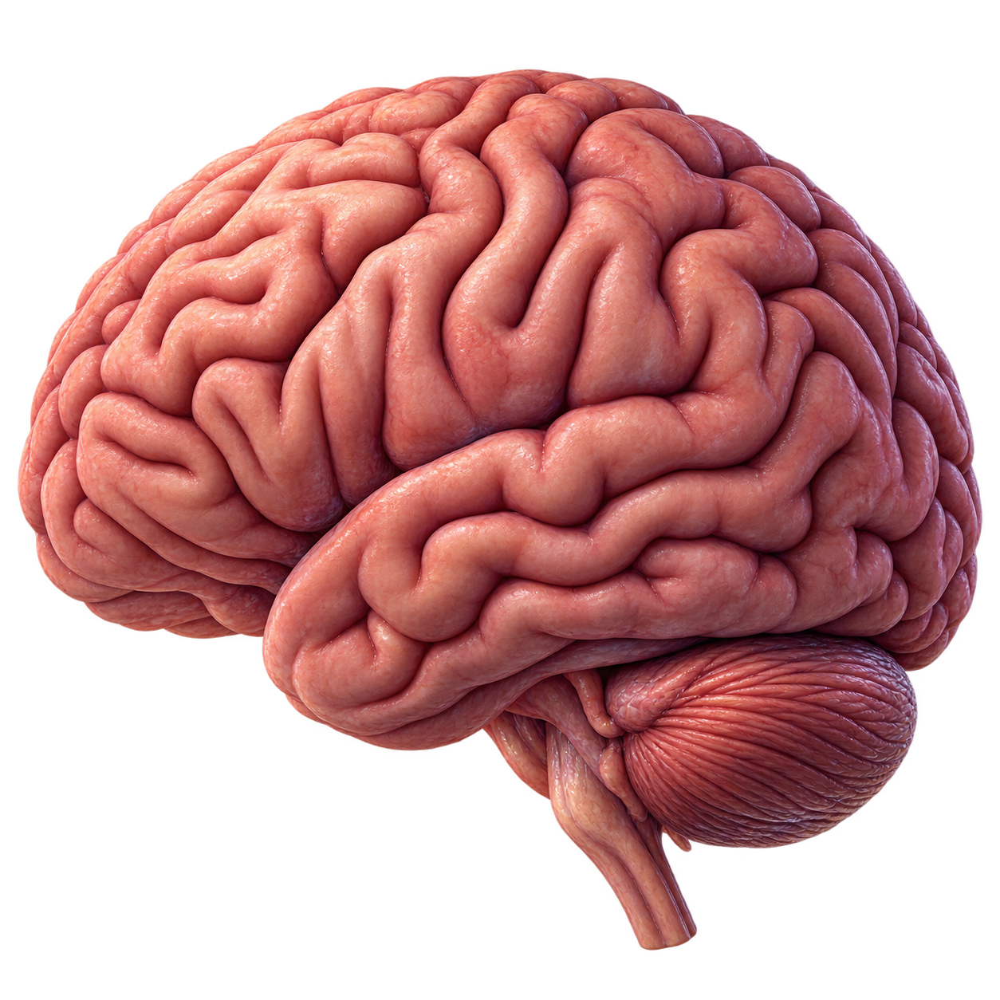

01◎
Social
media
Comparison. Infinite feeds. A version of life with no pauses.
WISDOM STUDENTS KERALA · 2025
A gentler way to understand your digital life. Because your attention is too precious to leave on autoplay.
SCROLL TO FEEL THE DIFFERENCE ↓
It starts softly.
The platforms are designed to keep us close. Not because we are weak—but because the pull is engineered to feel personal.
A QUIET CHECK-IN · ഒരു ചെറിയ സ്വയംപരിശോധന
Built for real days, not perfect ones. Take this private 16-question phone-use check-in and receive one gentle, practical next step.
WHAT THE SCROLL TOUCHES
Digital wellbeing isn't about deleting the internet. It is about making space for all the things that make a life feel full.
SCREEN TIME QUEST
This is a tiny game for real life. Pick today’s phone use, explore the glowing brain zones, then complete one small mission to build your balance score.
This is a learning game, not a diagnosis. Effects vary with sleep, content, context, and each person.
Choose a brain zone to begin

ATTENTION & FOCUS
Rapid switching and constant alerts can make it harder to stay with one task. Try a 25-minute notification-free block.
Comparison. Infinite feeds. A version of life with no pauses.
When the next level matters more than the next morning.
Your body knows when it needs you back.
Noticing is a brave first step.
Find yours →SMALL TOOLS, REAL CHANGE
No complicated programme. Pick one thing that feels possible today, then make it yours.
TONIGHT
RIGHT NOW
THIS WEEK
THE RESET LAB
A tiny digital wellbeing dashboard for the next seven days. No account. No pressure. Just choose a mode and begin.
What did you notice when you were not reaching for your phone?
Recovery isn’t a finish line. It’s a series of small, kind choices you make for yourself.
Notice the moments you use a screen to escape a feeling.
Learn what the algorithm wants—and what you want more.
Build little pockets of calm into your everyday.
With your body, your people, and your own attention.
Make room for the life you were meant to be present for.
KERALA, LISTENING
Anonymous conversations with students across Kerala are helping us understand how digital life really feels.
Explore the pulse →REAL VOICES
I didn’t realize how often I was absent from the people right in front of me.
Student · Kozhikode
We started a no-phone dinner once a week. It felt awkward for five minutes. Now, everyone asks for it.
Parent · Malappuram
Giving students language for this struggle changes everything.
Teacher · Kochi
THE READING ROOM
Thoughtful research, practical ideas, and conversations worth carrying forward.
A DIFFERENT START
A little less noise. A little more of your life.
Begin your check-in ↓THE CAMPAIGN IN FRAMES
Small reminders of the people, places, and moments worth looking up for.